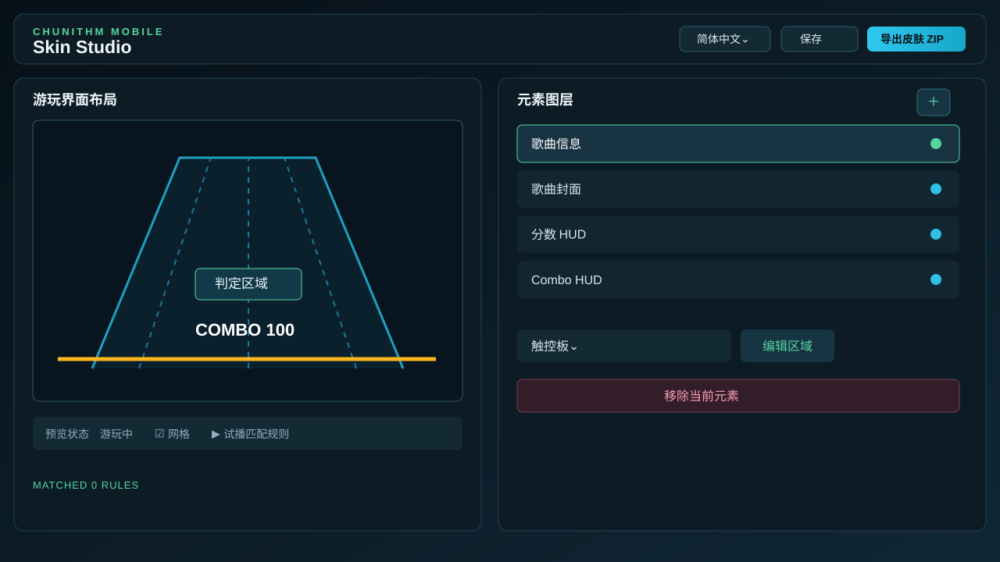
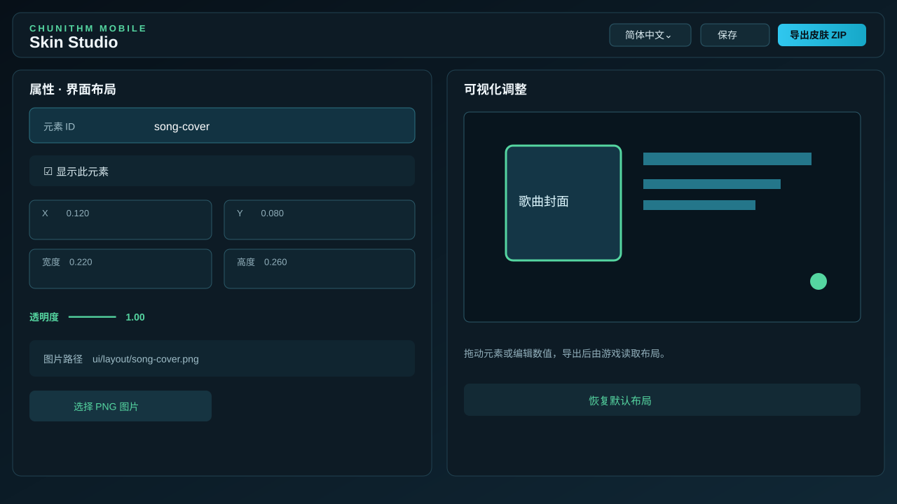
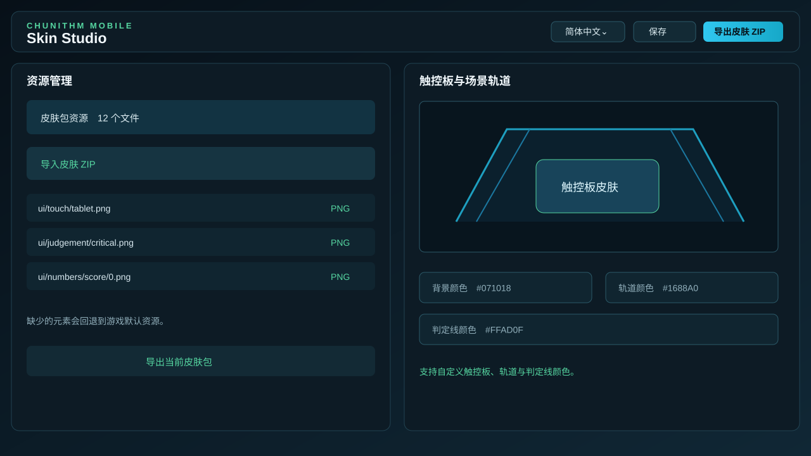
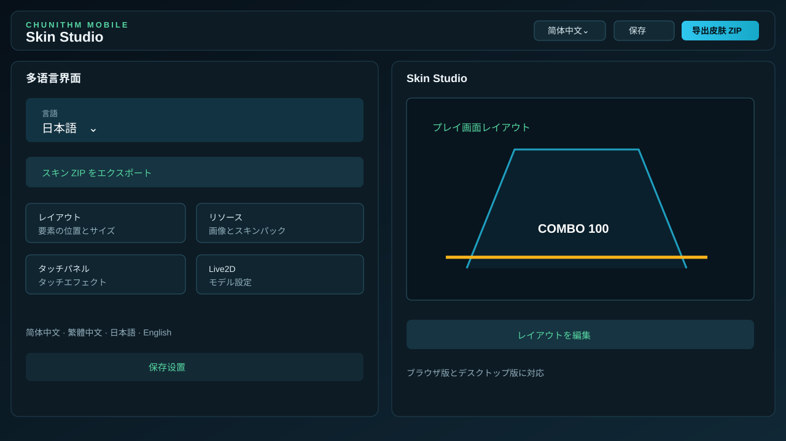

APK
Android APK
ARM64 构建，适用于 Android 7.0 及以上设备。
OPEN PROJECT · MOBILE RHYTHM GAME
这是一个独立的 Unity 移动端项目。这里集中放置当前构建、开发说明、联机核心和皮肤制作工具的入口。
DOWNLOADS
优先从 GitHub Releases 获取公开版本。本机生成的构建记录用于开发测试时核对文件。
ARM64 构建，适用于 Android 7.0 及以上设备。
使用 Xcode 生成的未签名包，需要使用自己的 Apple 开发者账号签名。
本机工作区已保存 APK 与 IPA 构建目录；安装时如果提示签名不一致，请卸载旧包后再安装新包。
GAME CLIENT
Unity 客户端位于 CHUNITHM-Mobile-Unity/。页面只展示当前文档已确认的内容，具体支持范围以仓库和实际构建为准。
面向 Android 与 iOS 的独立 Unity 客户端，支持移动端构建与本地资源导入。
项目包含谱面读取、游玩界面元素和可导入的皮肤资源，制作方式见 Skin Studio 文档。
功能说明以当前仓库、构建文件和测试结果为准，未完成的内容不会写入发布说明。
MULTIPLAYER CORE
服务端目录为 CHUNITHM-Mobile-Multiplayer-Server/，用于本地或自建环境的联机核心测试。
SKIN STUDIO
Skin Studio 位于 CHUNITHM-Mobile-Unity/tools/SkinStudio/，可以在浏览器中打开，也可以按目录说明运行桌面版。




按照现有文档，编辑器用于调整游玩界面的皮肤元素与布局，并导出游戏可读取的皮肤包。导入和字段限制以仓库内的 Skin Studio 文档为准。
tools/SkinStudio/index.html# 桌面版npm install && npm startCOMMUNITY
获取版本消息、交流使用问题或反馈测试结果。